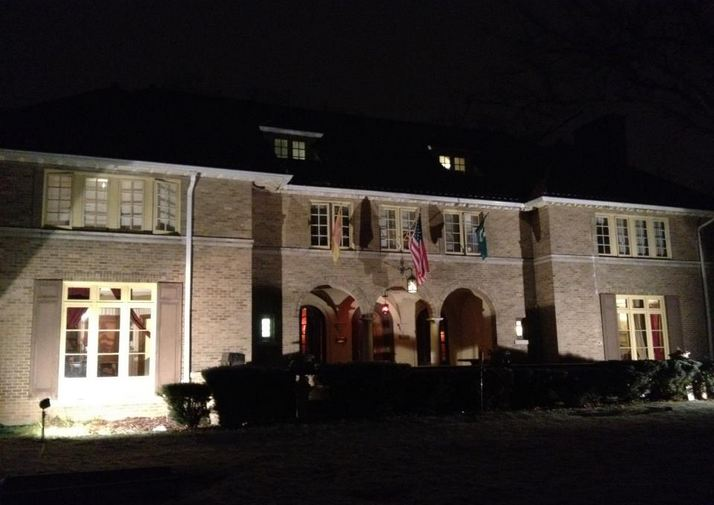

Psi Upsilon was founded in 1833 making it the fifth oldest fraternity in the United States. The Michigan State chapter, Epsilon Nu was created in 1943 and is the 43rd chapter of Psi Upsilon. The chapter’s rich history originates with Michigan State’s Hesperian Society, which dates to the late 1800’s as an academic society on campus. The current Psi Upsilon chapter house, located on the corner of Grand River Avenue and Harrison Road, was built in 1926 for the Hesperian’s, and has been in the organizations possession ever since. It currently houses over two-dozen brothers and has been deemed a historical landmark by the East Lansing Historical Society.
The Psi Upsilon motto is, “unto us has befallen a mighty friendship”. Following such a motto, each member is exposed to the timeless ideals, aims, and principles, which have served Psi Upsilon since it’s founding. The goals of each member are to make a significant contribution to their university, to their community, and to their country; to adopt and fulfill significant life goals; and to achieve the highest moral, intellectual, and social excellence and educational standards. Psi Upsilon’s brotherhood extends far beyond the local chapter with a large alumni base and many chapters at campuses throughout the country.